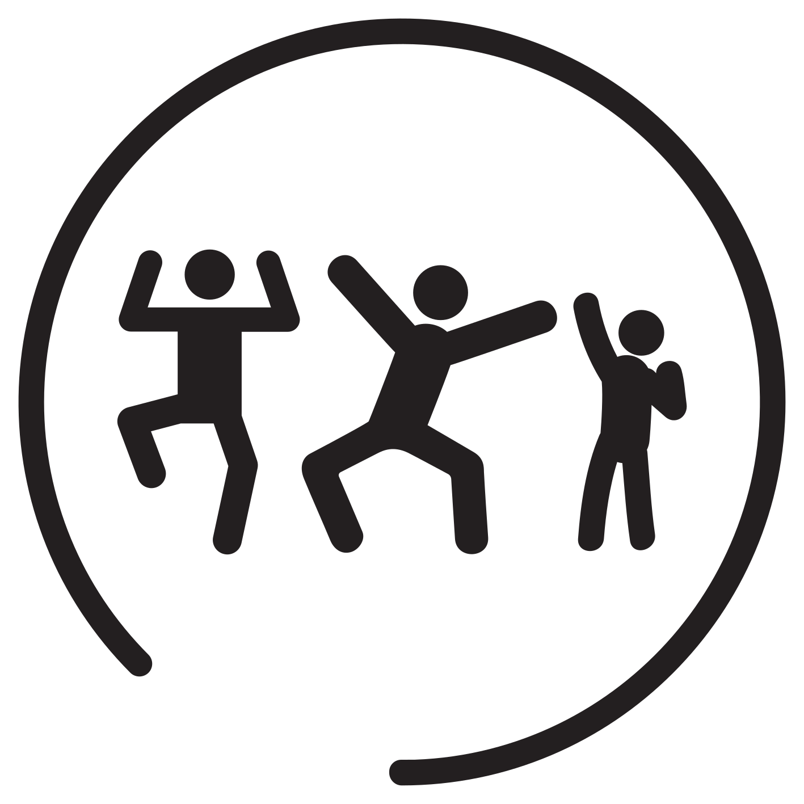

Le concept d'Escape Game chez Blackout-Room
L’Escape Game chez Blackout-Room à Nice, c’est quoi?
Blackout-Room est la septième enseigne d’escape game qui a vu le jour dans
la capitale Azuréenne. Le but du jeu est simple: s’évader d’une pièce dans laquelle
vous et vos collègues êtes enfermés en moins d’une heure. En team allant de 3 à 6 personnes,
il est alors question d’utiliser vos atouts, de communiquer de coopérer et de s’entraider pour
réussir à sortir le plus rapidement possible. Pour ceux qui découvrent le concept,
parlons en quelques lignes des origines de ce phénomène qui a séduit des millions de
personnes à la recherche de sensations qui sortent de l’ordinaire.
Escape Room: D’où ça vient?
Tout a commencé au Japon,il y a une dizaine d’années de cela. Le tout premier escape game ouvre
ses portes à Kyoto en 2008 et l’admiration est telle devant ce nouveau format de divertissement
que des enseignes ouvrent ses portes partout à travers le monde et envahissent l’Europe, et la Côte D’Azur n’y a pas échappé.
C’est ainsi que Blackout-Room ouvrira ses portes en
début de 2018 au
centre-ville de Nice avec ses deux premières salles conçues de ses propres mains.
>>Apprenez en plus à propos de Blackout-Room
Les salles chez Blackout-Room sont adaptées à TOUT public. Que vous soyez jeune, adulte, enfant, grand ou petit,
entre famille ou collègues, touristes, gamers ou entreprise…Les quêtes chez Blackout-Room sont adaptés à tout public
et sauront satisfaire les novices ainsi que les plus expérimentés. Dans nos salles vous retrouverez des mécanismes
originaux et ingénieux qui apportent une grande fluidité au jeu. Ces missions constituent un cadeau original et surprenant
qui plaira à coup sûr pour n’importe quelle occasion !

Famille
Gamers
Touristes
Entreprises
>>Offrir un cadeau original à vos proches
Nous accueillons dans nos locaux souvent des entreprises et différent organismes, que ce soit pour des soirées team-building,
des séminaires ou tout autre événement marquant.
>>Événements pro
Nos quêtes sont adaptés pour toutes sortes d’événements spéciaux : sorties en famille, entre filles, garçons, EVG, EVJC,
anniversaires et tout autres, nous sommes là pour vous surprendre !
>>Événements particuliers
Venir affronter les missions de Blackout-Room.
Vous avez décidé de franchir le pas et vous lancer dans l’aventure Blackout-Room. Vous avez RESERVER une de nos quêtes et vous
vous demandez ce qu’il va se passer maintenant? Nous allons répondre à vos questions !
Avant de venir.
Sachez dés à l’avance que deux places de parking vous attendent à l’arrivée dans nos locaux, ne perdez pas votre temps à chercher une place, nous avons pensés à tout. N’essayez pas de venir plus de 15 min en avance ou en retard, le mieux est de vous présenter à l’HEURE. Prévoyez à l’avance de passer un heure et demi dans nos locaux, une fois sur place, un Game Master prendra le temps de vous briefer avant votre session de jeu pour vous expliquer les règles et vous préparer à votre mission !
Après vous avoir introduit votre mission et répondu à toutes vos questions, votre quête commence, le compte à rebours démarre, c’est parti !
Durant votre quête
Enfermés dans une chambre décorée par nos soins, dans une immersion totale, votre équipe aura 60 minutes pour mettre tout ces atouts en avant et réussir à accomplir la mission qui vous sera confié. Vous devrez fouiller chaque recoin de la pièce pour trouver des indices, mais ce n’est pas tout: une fois trouvés, vous devrez interpréter correctement ses indices et comprendre comment vous en servir! Dans cette activité ludique, c’est vraiment l’esprit d’équipe qui compte, il ne faut pas hésiter à communiquer, mettre ses idées en commun et partager ses hypothèses, chaque détail compte.
Rassurez-vous, vous n’êtes pas laissées à l’abandon. Tout au long de votre session de jeu un Game Master vous a à l’oeil et sera là pour vous aider et vous aiguiller pour vous aider à progresser si jamais vous êtes bloqués. Il vous assurera un suivi personnalisé à vous et votre équipe durant toute la session de jeu.
A la fin de votre quête.
L’horloge tourne, le compte à rebours est terminé, que ce passe-t-il ?
Vous êtes sortis à temps
Vous avez réussi à sortir en moins d’une heure et c’est rempli de joie que vous sortez de la salle en ayant accompli votre mission. Le Game Master est là pour vous accueillir et écouter vos commentaires, revenir sur les faits marquants de votre aventure et prendre en compte vos critiques. Nous sommes toujours à la recherche de façons de nous améliorer chez Blackout-Room.
Vous n’avez pas réussi à temps.
L’heure s’est écoulée et vous êtes toujours enfermé dans la salle. Pas d’inquiétude, le Game Master vient vous ouvrir les portes, vous accueille et revient avec vous sur les moments clés de votre aventure, tout en vous expliquant ce qui vous manquait pour accomplir à temps votre quête..
Pour garder un bon souvenir du moment que vous avez passés chez nous, le Game Master prendra vous et votre équipe en photo et vous aurez la possibilité de la retrouver grâce à notre hashtag #blackoutroom
Avez-vous étés convaincus et êtes vous prêts à tenter l’expérience Blackout-Room?